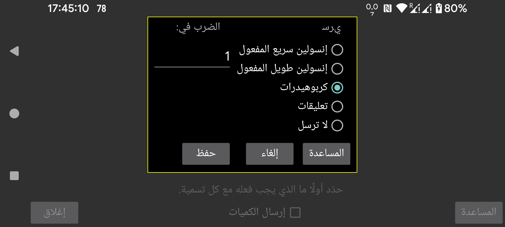

ar be de es fr hi it ja ko nl pl pt ru tr uk uz zh en
بالطريقة نفسها المستخدمة مع Libreview، يمكنك أيضاً تحديد كيفية تمثيل الكميات عبر خادم Nightscout داخل Juggluco.
حدّد كيف ينبغي إرسال الكميات التي تُدخل في Juggluco تحت تسمية معينة إلى Libreview. من الممكن إرسال أكثر من نوع واحد من الكميات باستخدام تسمية Libreview نفسها. على سبيل المثال، إذا كنت تسجل الكربوهيدرات والغلوكوز النقي كغذاء تحت تسميتين منفصلتين في Juggluco، فيمكنك تحديد أن يُرسلا كلاهما إلى Libreview على أنهما «كربوهيدرات».
بالنسبة للكربوهيدرات، يمكن ضرب الكمية المعطاة في Juggluco في رقم معيّن لكي تتمكن من تحويل وحدات أخرى إلى غرامات. فإذا كنت تعدّ في Juggluco حصصاً مقدار كل منها 10 غرامات، فيمكنك إدخال 10 هنا لكي تُرسل الغرامات إلى Libreview.
تعني «تعليقات» أن الكمية تُرسل إلى Libreview كما لو أنك أضفت تعليقًا في Librelink. وإذا حددت «تعليقات» هنا، فستُرسل التسمية مع الرقم المُدخل تحت تلك التسمية. على سبيل المثال: «Bike 50»، إذا كانت لديك التسمية «Bike» وأدخلت «50» تحتها. وسيظهر «Bike 50» تحت الرسم البياني في «السجل اليومي» داخل Libreview في الوقت المحدد.